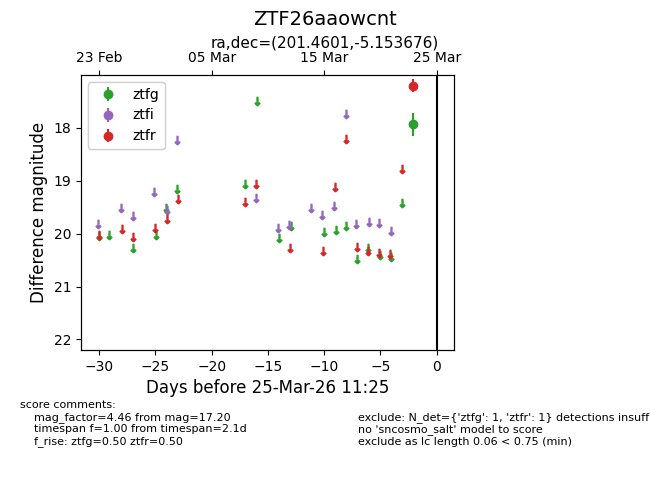
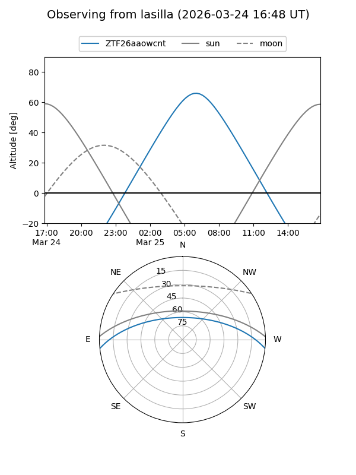
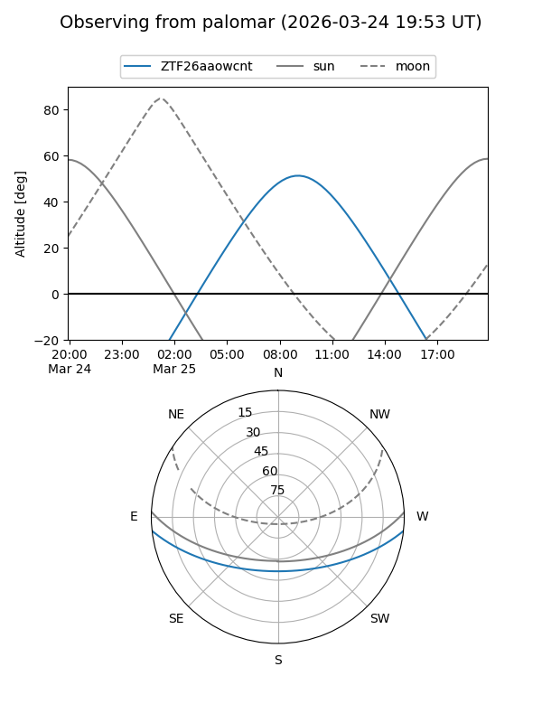

ZTF26aaowcnt
Target ZTF26aaowcnt at 2026-03-25 11:28
Aliases and brokers:
FINK: link
Lasair: link
ALeRCE: link
alt names
ZTF26aaowcnt (ztf,fink_ztf)
Coordinates:
equatorial (ra, dec) = 201.4601,-5.15368
equatorial (HMS+DMS) = 13:25:50.43,-05:09:13.23
galactic (l, b) = (318.6573,+56.66404)
Flags:
Photometry:
last ztfg=17.93, ztfr=17.20
1 ztfg, 1 ztfr detections
Lightcurve

Visibility


Additional plots